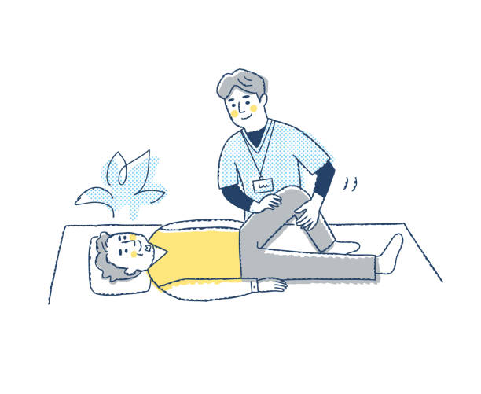

Action is the foundational key to all success.
自己紹介
| 名前 | 橋本萌生 |
|---|---|
| 生年月日 | 1997/4/28 |
| 現職 | 群馬リハビリテーション病院 理学療法士 |
| 趣味 | 筋トレ |
私はこんな人間です
私は新卒から理学療法士として病院で働いてきました．理学療法士は入院患者様に対してリハビリテーションを行い，社会復帰の手伝いをする仕事です． 他にも地域の高齢者に対して，介護予防を行なったり，新人の教育なども行なってきました．

私の興味
病院で働く中で電子カルテやリハビリテーション支援システムを利用する中で少しずつIt業界に興味を持つようになりました. 理学療法士としても自己研讃を行なっており，新しいことを学ぶことに対して意欲的ではあります． 今後も拡大していくであろう,IT業界にとても興味を持っております.
こんな開発がしたい
私はゆくゆくはユーザビリティから考えてweb開発をしていきたいと考えております。 今まではWeb言語のプログラミングを多く学んできましたが、現代のweb開発ではデザインなどのマーケティング的な発想が必要になると思い、学業の傍ら独学で勉強をしてきました。 デザインに関しては知識不足なところもありますが、今後も勉強を怠らず、御社の企業理念と将来性を伝えられるような唯一無二のweb開発ができる人材を目指して努力していきたいと思っております

経歴
北海道帯広市立
南商業高校
スピードスケート部
に所属し，インターハイ
にも出場しました．
高崎健康福祉大学
理学療法学科に
所属しておりました．
理学療法士
コミュニケーシ
ョン力を身に
つけました．
ラットラン
フロント技術を
勉強しました．